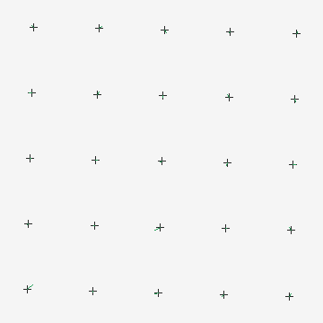
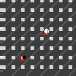
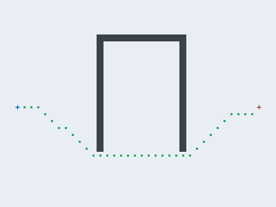

切る・削る・磨く × 高度知能化
装置の「測る・合わせる・決める・運ぶ」を支える4技術をC++17でゼロから実装：
カメラ校正＋Gage R&R（測定システム能力）・ダイ間位置合わせ（位相相関）と差分検査・
GPベイズ最適化によるレシピ探索・ウェハ搬送のA*経路＋ジョブ順最適化。
以下はすべてツール（metro_demo）自身が出力した実測値です。
チッピングを最小化する加工レシピ（送り・荷重）をGP代理モデル＋期待改善で探索。1点ずつ最良値がどう下がるか。
位置合わせ測定の変動を、装置(EV)・作業者(AV)・部品(PV)へ分解。%GRRとndcで良否判定（AIAG）。
格子フィデューシャルから最小二乗でアフィン較正。残差ベクトル（拡大表示）が小さいほど良い校正。

位相相関で参照ダイと被検ダイをサブピクセル位置合わせ→差分から欠陥抽出。赤枠＝検出欠陥。

チャンバ障害物を避けるA*パス（下図）と、搬送ジョブ順の2-opt最適化で総移動を短縮。
